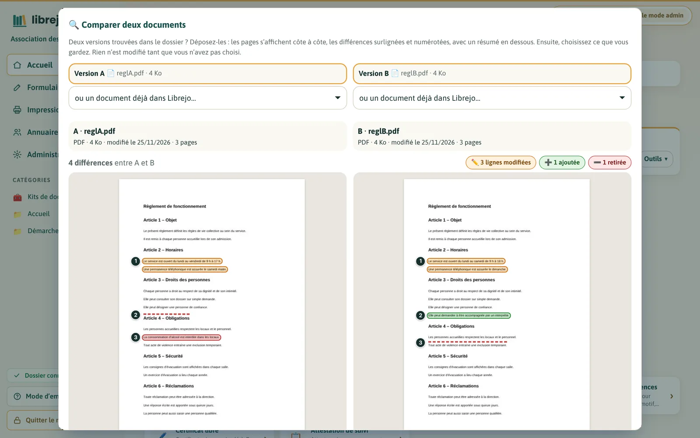

Les guides
Ouvrez le geste qui vous intéresse, ou imprimez le guide entier.
Pour l’équipe
Le guide de l’équipe en PDFPDF, 2 pages, à imprimer
1Ouvrir Librejo
Cliquez sur l’icône Librejo du bureau. Si le navigateur redemande l’accès au dossier, cliquez sur « Autoriser » : c’est normal, un clic suffit.
2Trouver un document
Tapez un ou deux mots dans la recherche de l’accueil (ou la touche /). Vous pouvez aussi ouvrir une catégorie dans le menu de gauche. Cochez « Chercher aussi dans le texte » pour fouiller l’intérieur des documents.
3Imprimer ou envoyer un document
Chaque document a ses boutons « Imprimer » et « Envoyer ». Avec Outlook, le mail s’ouvre en brouillon avec la pièce jointe. Avec une messagerie web, le PDF est téléchargé : il reste à le joindre.
4Remplir un formulaire
Onglet « Formulaires ». Remplissez : l’aperçu du document se dessine à côté. Cliquez sur « Créer le PDF », puis choisissez Imprimer, Envoyer ou Télécharger. « Terminé » efface tout : rien n’est enregistré.
5Imprimer plusieurs documents d’un coup
Onglet « Impression rapide ». Indiquez un nombre d’exemplaires par document, puis un seul bouton « Imprimer ». La liste est préparée par l’admin.
6Chercher un partenaire
Onglet « Annuaire ». Cherchez par nom, ville, mail ou téléphone. Un clic copie l’adresse mail.
7Garder ses favoris
L’étoile à côté d’un titre ajoute le document ou le formulaire à « Mes favoris », en haut de l’accueil. Ils sont propres à votre poste.
8Signaler un souci
Un document manque, semble dépassé ou contient une erreur ? Dites-le à l’admin de votre structure : lui seul peut le corriger.

Pour l’admin
Le guide de l’admin en PDFPDF, 2 pages, à imprimer
1Passer en mode admin
Bouton « Accès admin », en bas du menu. Indiquez votre prénom : il sert au journal des modifications. Le mot de passe protège des erreurs de manipulation, ce n’est pas un coffre-fort.
2Ajouter un document
« Ajouter un document », puis déposez le fichier. Donnez un titre, une catégorie, un statut et, si besoin, un rythme de relecture. Le fichier est copié et renommé ; l’original ne change pas.
3Marquer un document
À l’ajout, Librejo peut inscrire sur le PDF ou le Word le nom du fichier, la version et la date, les numéros de page, le logo et le pied de page de la structure.
4Mettre à jour un document
Menu « … » du document, puis « Modifier ». Librejo vous donne une copie de travail. Modifiez-la, redéposez-la : les différences s’affichent, puis vous enregistrez une nouvelle version ou une petite correction. L’ancienne part aux archives.
5Comparer deux versions
Outils, « Comparer deux documents ». Déposez les deux fichiers : les différences sont surlignées et numérotées. Choisissez ensuite lequel garder.
6Valider avant de publier
Un document en « Brouillon » ou « À valider » reste invisible pour l’équipe. « Valider et publier » demande le nom de la personne qui valide.
7Prévoir les relectures
Choisissez un rythme par document : tous les ans, tous les deux ans. Librejo affiche « À relire » le moment venu. « Relu aujourd’hui » repousse la date sans changer le document.
8Retrouver une ancienne version
Outils, « Archives ». Triez par date, par nom ou par catégorie. Vous pouvez ouvrir, comparer ou restaurer. Rien n’est jamais supprimé.
9Gérer les formulaires
Dans l’administration, ajoutez des modèles depuis la bibliothèque, modifiez-les ou masquez ceux qui ne servent pas. Faites relire chaque modèle avant de vous en servir.
10Tenir l’annuaire
Ajoutez les structures partenaires et leurs contacts, ou importez un export d’Outlook, de Gmail ou un tableur. Librejo repère les doublons. Jamais de personnes accompagnées ni de contacts personnels.
11Préparer l’évaluation HAS
Outils, « Préparer l’évaluation HAS ». Reliez chaque document au critère qu’il prouve. Librejo montre ce qui est à jour, à relire ou manquant, et exporte le dossier de preuves.
12Suivre et sauvegarder
Le tableau de bord montre ce qui est à surveiller et ce qui sert vraiment. Le journal garde la trace de chaque modification. Faites une sauvegarde régulière, rangée ailleurs que dans le dossier Librejo.
